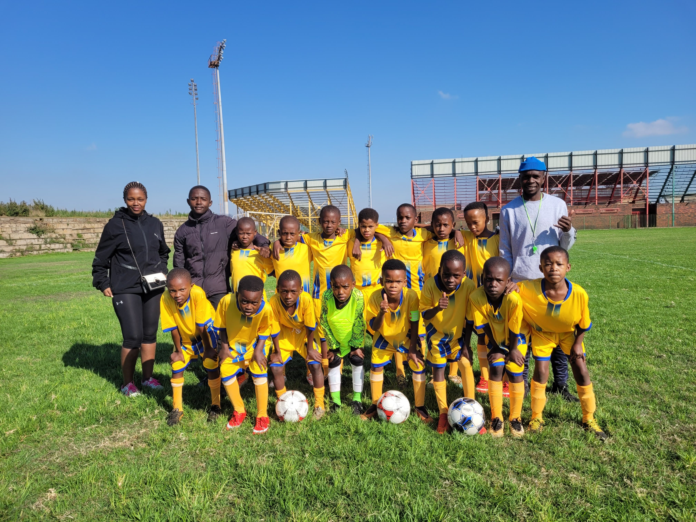

The home of prodigies
About YBFA
Young Ballers FA is a foorball development program that focuses on early chilhood development. We focus on indivodual player performance and progress, and also the overall team performance and progress. With the player performance and progress we look at football, discipline and education.
We have been in existence since 2022 and our approach to sports follows the practice of the best academies from around the world with our South African twists to it.
